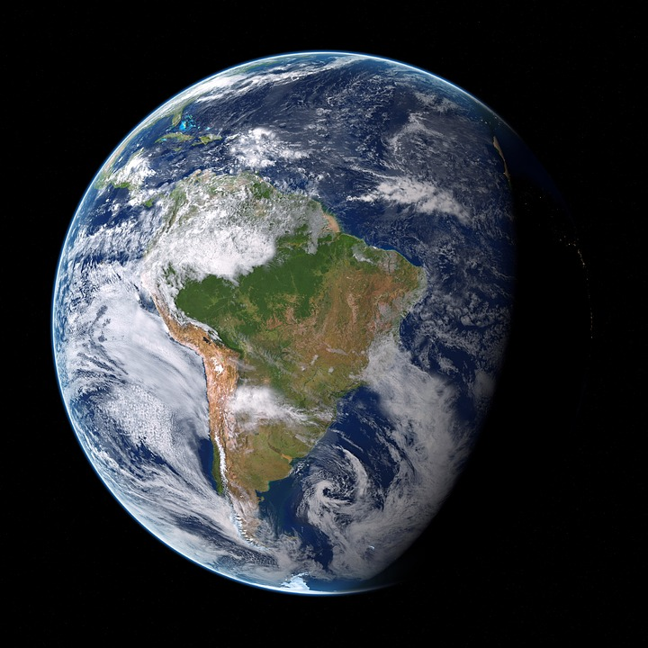

Earth
Earth is the third planet from the Sun and largest of the terrestrial planets. Surprisingly, while it is only the fifth largest planet in terms of size and mass, it is the densest (5,513 kg/m3) of all the planets. Earth is the only planet in the solar system not named after a mythological being. Instead, its name is derived from the Old English word "ertha" and the Anglo-Saxon word "erda" which means ground or soil.
Earth was formed somewhere around 4.54 billion years ago and is currently the only known planet to support life - and lots of it.
- The Earth was once believed to be the centre of the universe. For 2000 years ancient astronomers believed that the Earth was static and had other celestial bodies travelling in circular orbits around it. They believed this because of the apparent movement on the Sun and planets in relation to their viewpoint. In 1543, Copernicus published his Sun-centered model of the Solar System which put the Sun at the centre of our solar system.
- Earth is the only planet not named for a mythological god or goddess. The other seven planets in the solar system were named after Roman gods or goddesses. For the five visible to the naked eye, Mercury, Venus, Mars, Jupiter and Saturn they we named during ancient times. This Roman method was also used after the discovery of Uranus and Neptune. The word “Earth” comes from the Old English word “ertha” meaning ground or land.
- Earth is the most dense planet in the solar system. The density of Earth differs in each part of the planet – the core, for example, is denser than the Earth’s crust – but the average density of the planet is around 5.52 grams per cubic centimetre.
- The gravity between the Earth and the Moon causes the tides on Earth. This effect on the Moon means it is tidally locked to Earth – its rotation period is the same as its orbit time so it always presents the same face to Earth.
- The rotation of the Earth is gradually slowing down. The deceleration of the Earth’s rotation is very slow, approximately 17 milliseconds per hundred years. Eventually this will lengthen our days but it will take around 140 million years before our day will have increased from 24 to 25 hours.
- Earth’s atmosphere is composed of 78% nitrogen, 21% oxygen, and trace amounts of other gases including argon and carbon dixoide.
- The large amount of oxygen on Earth comes from our plant life’s consumption of carbon dioxide during photosynthesis.
- Earth has a very powerful magnetic field. This field protects the planet from the effects of solar winds and is believed to be a result of the nickel-iron core of the planet combined with its rapid rotation.
- The Earth has an Ozone Layer which protects it from harmful solar radiation. This shell is a special type of oxygen that absorbs most of the Sun’s powerful UV rays.
Source: https://theplanets.org/earth/